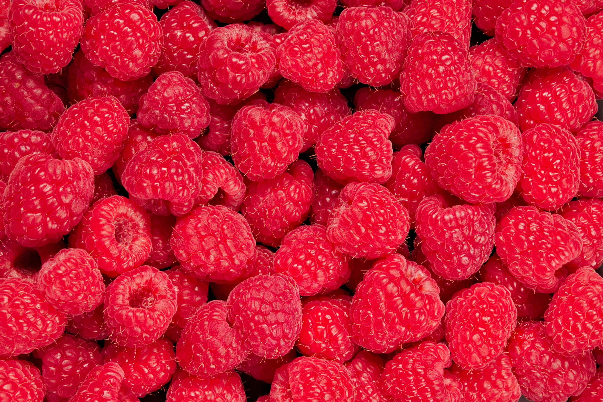

3 Fun facts about raspberries

1. Origins: Native to Europe and northern Asia, archaeological evidence suggests
that we have been eating raspberries since the Palaeolithic era. Separate but similar raspberry
species occur in temperate areas of North America
2. First cultivated: The Roman agricultural writer, Palladius, documented the cultivation
of raspberries in the fourth century AD. King Edward I is credited with encouraging the cultivation
of raspberries throughout England in the thirteenth century.
3. Types: There are over two hundred varieties of raspberries. Popular summer-fruiting varieties
include 'Glen Ample' and 'Malling Minerva'. 'Autumn Bliss' is a classic autumn-fruiting variety.